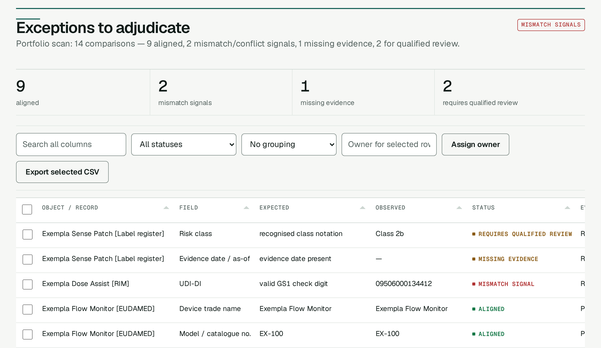

Clinical and device operations support for Denmark and the EU.
Things tend to go wrong late. An eCOA that is not ready for the first participant. A device change that missed a record. ClinicOps works on those two, and has a native Danish speaker read the Danish wherever Danish is needed.
The free tools on this site run in your browser. Nothing you type is uploaded, and there is no sign-up.
eCOA and patient-reported outcomes
An eCOA needs a licence, text that has been translated and reviewed, a screenshot and migration check, and a round of testing. All of it has to be finished before the first participant. ClinicOps plans each instrument and language, has a native Danish speaker review the Danish, and keeps changes under control once the study is running.
Open the free workbench Load the fictional example Read the eCOA section
- Licence for the instrumentSigned
- Danish versionIn review
- Screenshot and migration reviewOpen
- Testing windowBooked
First participant planned in 9 weeks. One item is blocking.
Medical device records
A change to a device has to reach EUDAMED, the UDI data, the certificates, the SS(C)P, the labels and the instructions for use. ClinicOps compares what you hold, lists what does not match, names who owns each gap and records how it was closed.
Try the scanner How a review works
Samples: specimen register, transition map. Scope a review.

Danish language and pharmacovigilance, inside both
The Danish layer runs through both areas above rather than standing apart from them. Patient and safety material, read by a native Danish speaker. Local literature monitoring and Danish safety communications (DHPC), within these limits: Danish language and records work only; no statutory pharmacovigilance role is taken unless explicitly appointed; medical assessment and signal decisions stay with your safety organisation.
Skriv gerne på dansk.
Try the work first
Each of these runs in your browser on your own data. In the eCOA workbench every checklist item names its source.
- eCOA Delivery WorkbenchPlan every instrument and language, compare the protocol schedule with the specification, build a testing script skeleton, keep risks and changes in one place.→
- COA Type FinderSort an assessment into patient, observer, clinician or performance outcome and keep an inventory with the gaps flagged.→
- Licence and Translation Lead-Time PlannerThe earliest first-participant-in date from your instruments, languages and kick-off, and the version that sets it.→
- Visit and Diary Burden EstimatorMinutes per visit and per study week from the instrument times you enter, with your own limits flagged.→
- Regulatory Integrity ScannerCheck whether one change reached the records that should show it, or import a device export and look at the whole portfolio.→
- Danish DHPC Submission CheckerThe Danish Medicines Agency's DHPC process as a checklist, with notes for Norway, Sweden and Finland.→
- EUDAMED Identifier CheckPaste an identifier and see what kind it is and what the public record can and cannot tell you.→
How a project runs
Agree the scope
One page: what is in, what is out, what done looks like, and who on your side decides.
Work in short stages
At the end of each stage you see what exists, what is still open and what carrying on costs. You can stop there.
Keep one log
Risks, open questions, changes and decisions in one list, each with an owner and a date.
Hand over
Files, the log and the evidence behind every closed item, so your team or another consultant can carry on without ClinicOps.
The stages follow PRINCE2, and the eCOA workbench is organised the same way. PRINCE2® is a registered trademark of PeopleCert.
How ClinicOps is run
ClinicOps is a small practice, not a platform or a firm. Every project has one accountable owner, a written scope, and files and a log you keep. How ClinicOps works →
Work is performed within demonstrated competence and agreed scope. Formal statutory roles — QPPV and deputies, PRRC, authorised-representative duties, conformity decisions — are held only where explicitly appointed, and medical and regulatory sign-off stays with the formally responsible person or organisation.
Before you write
What does it cost?
ClinicOps quotes after a written scope brief, so you see the price before any work starts. The free tools stay free and need no sign-up.
How long does it take?
Timing is agreed in writing at scope. It pauses while evidence is outstanding, so complete records keep it short.
What happens to my data?
The tools run in your browser and send nothing anywhere. For project work, please do not send patient-identifiable information. The contact page says how to share records.
What if the person on my project is unavailable?
Work runs in short stages, and each ends with files and a log that someone else can pick up. If a question needs another specialist, ClinicOps says so and involves one only by agreement with you.
What do you need from me first?
What changed or what the question is, which records or systems it touches, and who on your side decides. That is enough to start.
Have a project in mind?
Write to info@clinicops.dk or fill in the short scope form. A few lines about the study or the product is enough to start.
Du er velkommen til at skrive på dansk.